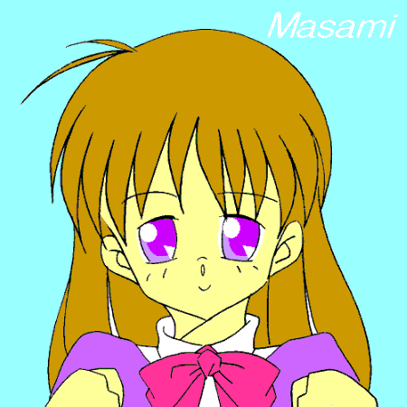

戻る
「痛ッ！」先輩の持っていたハンマーが床に落ちて、大きな音を立てた！
「大丈夫ですか？」
「ああ、ちと釘で引っかいた・・・」
「あ、先輩・・・血が・・・」あたしは持っていたハンカチを腕に当てて押さえる。
「大丈夫だって」
「ダメですよ・・・このまま医務室に行くんです」
「大袈裟だって」先輩は手を引っ張り、作業を続けようとしている。
「だめです・・・ちゃんと消毒しなきゃ・・・」あたしは紅く染まったハンカチを見て、暗い気持ちになってしまった。
「ダメだから・・・ちゃんと・・しないと・・・」俯きながらそう言うあたし。
そんなあたしに気付いたのか、先輩はハンマーを床に置くと
「判ったよ」そう言い、あたしの手を取ると医務室に向い出した。
「実はあのオキシドールが嫌いなんだよ」そう言うと、ちょっと苦笑いする先輩。
「あはは・・・子供みたいですネ、それって」
あたしは一緒に先輩と笑っていた。
貴方の為のヒロイン
ヒロイン ２０th
イラスト・ＭＯＮＤＯさん（Ｓｐｅｃｉａｌ Ｔｈａｎｋｓ）
作：kagerou6
「相変わらず凄い量だね」
千晴ちゃんはそう言ってあたしの靴箱から落ちた手紙を拾っていた。
「ひぃ、ふぅ、みぃ・・・・今日は１０枚か」そう言うとあたしに手紙を差し出す彼女。
「毎日、断りの手紙書くの大変でしょ？」
「でも、悪いから・・・」あたしは手紙を受け取りながらそう答えた。
「本命の彼とかからは来ないのかな？」
「え？」あたしが千晴ちゃんに目を向けると
「だってさ、学校中のイイ男のラブレターに断り書くんだもん」そう言いあたしを見つめている。
「あたし・・・まだそういうのよくわかんないから・・・」そう言ってあたしは誤魔化した。
「お嬢さん・・・」
学校の帰り道、公演脇の道を歩いていると突然呼び止められた。
「え？」声のするほうに振り向いてみると、なにやら机が置いてあり占い師らしき人がいるだけだった。
・・・この人なのかな？・・・あたしはただなにも言わないで、その占い師を見ていると
「辛い恋をしているんだね」カードらしきものを並べながら、そうボソっと言った。
「え？」
「叶わない恋か・・・」
「な、なんでそんな事を言うの？」
「それは貴女が一番知っているからね」
「あたしが？」
「そうだよ」そう言うと、１枚のカードを開く。
「これが運命なのか・・・」そう言うとそのカードをふいに投げた。
「あ？」あたしはカードを取ろうとして手を伸ばしたけど、カードはすり抜けてしまった。
「あの・・・このカードいったい・・・」あたしは落ちたカードを拾い、その占い師に目を向けた時そこには誰もいなかった！
「叶わない恋かぁ」あたしは窓から克也様を見ながらついそんな事を言っていた。
「なに？・・・まさみちゃん恋しているの？」そう言って千晴ちゃんがきょろきょろしてあたしに近付いてくる。
「Ａ組の田中君？・・・・それともＣ組の川本君かな？」
千晴ちゃんはそう言いながら、あたしをじろじろ見ている。
「ち、違うわよ・・・お話のことなのよ・・・」あたしは慌てて否定する。
「ちぇ〜・・・せっかくのスクープだと思ったのに・・・」彼女はそう言い、手にしていたデジカメを仕舞う。
「今さ・・・ちょっと小説にはまっていて・・・」あたしはそう言い、文庫本を彼女に見せた。
「はぁ〜ん、現実の恋人いないからって、お話にのめりこんでいるのぉ？」
「そ、そんなんじゃあないけど・・・」
「こんな風にあたしもしてみたいなって思って」
「”恋する事”に憧れているようじゃあまだまだだねぇ」そう言い千晴ちゃんは笑った。
あたしはホントの事が言えないから、ただ一緒に笑うしかなかった。
「叶わない恋かぁ・・・」
部活に向かう途中、つい口にしてしまった。
この言葉があたしの中で大きくなっているみたいだったから。
”言えない恋”に間違いはないから。
口にするたびに、あたしは気が重くなっていた。
「どうした？・・・元気ないなぁ？」そう言って克也様があたしに声を掛けてきた。
「あ、”先輩”こんにちは」
あたしはそう答え、克也様を見つめた。
もう入部から数ヶ月が経ったから、”先輩”と言えるようになったのだ。
まだ、”克也様”とは言えないけど・・・すこしだけ近付けた気がして、あたしは嬉しかった。
「なんでもないですよ先輩」
「ホントか？」そう言って笑う克也様。
「そうですよ、気にしないでくださいね」
「まあ詮索すると、直美とか恵が煩いしな」
「あ、先輩は直美先輩とか恵先輩が苦手なんだぁ♪」
「ば、ばか・・・そんなんじゃねーよ」
「あはは、先輩焦ってるぅ♪」あたしはそう言って笑い、克也様を見つめていた。
「いよいよ恒例の演劇祭の時期だ！・・・今日もガンバって練習に励めよ！」そう克也様が部員にハッパをかけている。
２学期も後半に入っているので、３年の先輩は引退している・・・はずだった。
実際、他のクラブでは３年生を見かける事は無かった。
「どうだ、準備は上手くいっているのか？」演劇部では数人の先輩がまだ来て、短時間だけど指導をしてくれている。
どうやら３年生は交代で来る事にしているらしかった。
そういった事で、今日は克也様が”気分転換”と言って、メガホン片手に後輩を指導している。
「憂さ晴らしでしょ？」
「違うわい♪」
そう言って後輩をメガホンで叩きながら笑う克也様。
「俺達はもういないんだから・・・ちゃんと主役しろよ？」
「大丈夫、きちんと追い出しますから♪」
「ほう・・・いうじゃないか？」
「貴方に教わったんですから」
「そうだな」
そう言い、笑いに包まれた演劇部。
こんな事が言えるのもあと少ししかなかった。
・・・あたしは何時言えるのかなぁ・・・他の人と楽しそうに話をしている克也様を見て、人知れずため息をついていた。
「今度の公演会で最後なんだよね」部室で着替えながら、あたしは他の人の言っている事を聞いていた。
・・・そうなんだけど、どうしたらいいのかなぁ・・・ずっと考えているのに、まだ”答え”が出せないあたし。
「先輩に告白するんでしょ？」
「やだなぁ・・・しないわよ」
「だってさ、あんた最近ずっと見つめているじゃない？」
「あ、ばれてるの？」
「もうばればれだって♪」
「うーん、そっかぁ」
「ここまで来たら、言うっきゃなよ」
「でもさ、先輩って彼女いなくないかな？」
「聞いた事ないよ・・・たぶん大丈夫でしょ？」
・・・先輩に告白かぁ・・・あたしはそんな事を言っている彼女達をあとに、部室から出て行く。
「あたしにもあんな勇気があったらなぁ・・・」
「え？・・・勇気ってどうかしたの？」
「あ・・・聞いてたんですか！」
あたしは恵先輩の笑顔に、顔が段々赤く変わっていくのが判っていた。
「ここなら誰も来ないから♪」
体育館脇の所まで行くと、恵先輩がそう言ってあたしを見つめている。
「真剣に考えていのでしょ？」恵先輩がそう聞いてくる。
「いえ・・・たいしたことじゃあ・・・」あたしはつい俯きながら答えた。
「そうなの？・・・好きな人の事とか考えていたんじゃなくて？」
「あ、あの・・・あたしはべつに・・・」
「そう？・・・克也の事考えていると思っていたんだけどなぁ？」
「え・・・なんで克也様の事を？」あたしは慌ててしまい、つい”様”をつけて言ってしまった！
「いつも目が追いかけているし・・・」先輩は顔をあたしに向けると
「それに”様”だもん♪」そう言って笑った。
「そっかぁ・・・まさみちゃんは克也の事が好きだったんだぁ・・・」先輩にそう言われ、顔が段々火照ってしまうのが判る。
「ずっと好きだったんですけど・・・あたしの事覚えてなくて・・・」
「克也って薄情なんだなぁ」そう言いながら先輩は笑う。
「それじゃあ・・・この学校に来たのも？」
先輩の言葉にあたしはなにも言えなかった。
「そうなんだ♪」先輩は微笑みながら、あたしの事をじっと見つめている。
「克也は今フリーだったと思うから、頑張って告白なさいな♪」
「でも・・・あたし、どう言っていいのか・・・」
「まさみちゃんがホントに真剣なら、きっと伝わるから」
「そうでしょうか？」あたしは先輩の言葉に頷くしかなかった。
「伊藤さん元気無いね」
窓から外を見ていたら、後からそう言われ振り向くあたし。
「どうしたの？・・・いつもの元気無いじゃない？」その人はそう言ってニコニコしている。
「あの？」相手の名前が出て来なくて、そう聞き返すと
「もう半年経つのに・・・覚えてくれてないんだ」そう言って落胆した顔であたしの事を見ている。
「ごめんなさい・・・あたし、人の顔とか覚えるの苦手で・・・」
「そう？・・・手紙には返事書いてくれているのに？」そう言うと相手は笑った。
「一応覚えておいてね・・・ぼくの名前」
彼はそう言うと机に名前を書いて指差していた。
「佐々木・・・じん？」
「違うよ・・・”仁”とかいて”ひさし”って読むんだよ」
「そうなんだ」
「やっぱり、笑顔のが可愛いよ」
「え？」
不意にそう言われ、あたしはなんだか恥かしい気持ちになっていた。
「君には笑顔があっているのさ！」
「あ、ありがと・・・」
「それでぼくの隣にいてくれれば完璧なんだけどね」彼はそう言い、じっとあたしを見つめている。
「あ、あの・・・それは・・・」彼に言われ、どう答えて良いのか判らなくなっているあたし。
「まあ、ぼくの事覚えてくれただけでも進歩かな・・・それじゃあね」彼はあたしにそう言うと教室から出ていった。
「おやまあ・・・佐々木君かぁ」千晴ちゃんがそう言いながら、なにやらメモをしている。
「好感度我がクラスNo,１ではないか！」驚いた風に言う彼女は、あたしを見てニヤッと笑うと
「彼の事気になる？」と言って、あたしに詰め寄ってきた。
「そんなんじゃないわ・・・あたしの事心配してくれて・・・」
「ほぉ・・・そいで？」
「”元気無いなぁ”って言って・・・」
「可愛い事言っているなぁ」
「え？」あたしが千晴ちゃんを見ると、飽きれた顔になっている。
「彼の事、憧れている子一杯いるのに・・・なんだって”拒否”されているあんたに声かけたんだと思うの？」
「あたし・・・拒否なんてしてないよ？」
「ばかだなぁ・・・手紙断っているでしょ？」
「えぇ・・・まぁねぇ・・・」
「それだけ貴女の事本気なんだよ」
「そうかなぁ・・・」千晴ちゃんの言葉にあたしは彼の出ていったドアに目を向けていた。
・・・佐々木君かぁ・・・千晴ちゃんの言った言葉が気になって、授業もなんだか上の空だった。
ふと彼の方に目を向けると、彼と目があった気がして視線を外した。
・・・佐々木君て何時もあたしの事を？・・・
ノートに書き写すマネをしながら彼のほうを見ていると、時々あたしを見ているようだった。
”本気なんだよ”
千晴ちゃんの言葉が何時までの頭の中を飛びまわっていた。
「どうかしたの？」授業が終わってあたしの所に来た千晴ちゃんが、あたしの顔を見てニヤニヤしている。
「どうも・・・しないんだけどさ」小さくため息をして、つい佐々木君の方を向いてしまうあたし。
「ほぉ・・・気になるんだ？」
「だって・・・あんな事初めてだし・・・」
「まあ、このお嬢さんはもっと勉強しなきゃならない事が多いんだろうねぇ」
「勉強って？」
「恋愛♪」そう囁く千晴ちゃんの言葉にあたしは顔が火照ってしまった。
「まずは相手を良く知らないと♪」千晴ちゃんはそう言うと、あたしをグランド脇に引っ張っていった。
「なんでこんな所に？」
「佐々木君はサッカー部なんだよだから♪」そう言い、グランドに目を向ける彼女。
「今日、北高と練習試合だって聞いたからさ」
彼女はそう言うと、手帳を取りだし確認してる。
「彼は先発出場だから・・・出ているはずなんだけどなぁ」
「なんでそんな事知っているわけ？」あたしは不思議に思ってそう聞くと
「ウチのクラスの理恵ちゃんから聞いたんだ」と、彼女は言った。
「理恵ちゃんが？」
「そうだよ、彼女はマネージャーだからねサッカー部のさ」
「ほら・・・あれがそうだよ」
千晴ちゃんの指差すほうに目を向けると、中央に小さな人影が動いていた。
彼はボールを操りながら、どんどんゴールに近付いていく。
廻りは止めようとしていたけど、彼はフェイントをかけて避けていく。
「よく判らないけど・・・凄いね」
「でしょ・・・ほら、また抜いた」
彼は３人を抜き、ゴール前まで来ていた。
「あと二人！」あたしはいつのまにか手を握り締め、彼から目が離せなくなっていた。
ねぇ・・・どっちが勝ったのかなぁ？」グランドから誰も居なくなって、千晴ちゃんにそう聞くと
「途中からだったしね、あたしにも判らないよ」と、言われてしまった。
「そっかぁ・・・でも、凄かったね」
「カッコ良いでしょ？・・・佐々木君」
「あ・・・そ、そかなぁ・・・」
「認めなさいよ？・・・手を握り締めていたんだから」
「あ・・あれはその・・・」
あたしは千春ちゃんにそう言われて、なにも言い返せないでいた。
実際、サッカーをしている佐々木君の姿に見惚れていたからだ。
「ほら・・・佐々木君とこ行くよ？」
「え？」不意に言われ、なんでだか判らないあたし。
「勝ったか知りたいでしょ？」
「えぇ・・・そうだけど・・・」
「でしょ・・・だから行くのよ」そう千晴ちゃんに押しきられ、あたしはグランド脇を歩き出した。
「伊藤さんどうして？」
あたしを見つけた佐々木君は、さっきの疲れなんかを出さないで笑顔で迎えてくれた。
「あたしには聞いてくれないんだね」そう言って千晴ちゃんがいじける。
「あはは・・・気にしないで」
「するよ！」漫才みたいな掛け合いに、あたしはつい笑ってしまう。
「さっきまさみと見ていたのよ・・・凄いじゃない」
「え〜見られていたんならもっと頑張っておけば・・・」
「もっとってなんだ？佐々木？」後からサッカー部の先輩が来て、あたし達を取り囲んだ。
「頑張りが足りないか・・・ふぅ〜ん？」
「じゃあ、その足りないせいで”引き分け”したんだな？」
「う、先輩・・・そういう訳じゃ・・・」
「ばかもん！・・・お前の考えなんて見えているわい！」そう佐々木君を怒鳴ると、あたしの事を見つめている。
「君が・・・伊藤さん？」
「あ・・・はい・・・」名前を聞かれつい答えているあたし。
「こいつが”手を抜いた”せいで、勝った所見せられなくて・・・」
「ちゃいますよ・・・ちゃんと頑張ったって・・・」
「そうですね・・・皆さんカッコ良かったですよ」
「「「ホントに？？？」」」
大勢があたしを見つめて、なにかを期待していた。
「えぇ・・・あたしはそう思って見ていましたから・・・」迫力に負けそう言うと
「「「おーし！次は絶対勝つ！！！」」」と、練習を始めてしまった。
「あーあ、現金だなぁ」そう言っている千晴ちゃんに、あたしはなにも言えなかった。
素直にそれがカッコイイと思っていたからだ。
「いいなあ・・・まさみちゃんは・・・」隣で千晴ちゃんがため息を付いている。
「え？どうして？？」
「だってさ、初めてあった人なのにあんなにしちゃうんだもん」そう言って練習している部員を指差していた。
「偶然だよ・・・今日勝てなかったからでしょ？」
「そう？・・・そうは思えないけどね」
「偶然だって」薄く暗くなってきたグランドを見ながらあたしはそう答えていた。
「もう部活終りだから、駅まで送っていくよ」佐々木君は汗を拭きながら話掛けて来た。
「大丈夫、まさみはあたしが送るから」千晴ちゃんがそう言ってあたしの手を取る。
「佐々木なんかには渡さないんだから♪」
「ちょっと千晴ちゃん・・・」
「あはは・・・じゃあ今度はぼくが送るからね」佐々木君はそう言うと、不思議そうな顔であたしを見つめた。
「でも・・・演劇部は今日部活無いのかな伊藤さん」
「え？」
「だって試合からいただろう？」
「あ！」あたしは時計を見ると、もう終わっている時間になっていた！
「ゴメン・・・あたし行かなきゃ」二人を置いて立ちあがり、体育館に向かって走り始めた。
・・・今日配役とか決めるって言っていたんだわ・・・息をハァハァさせ、考えながらあたしは走った。
「もう、いないよね」暗くなっている体育館の入り口で、あたしは廻りに目を向けていた。
「もう帰っちゃったよねぇ」誰もいない入り口で、あたしは間に合わなかった事に座りこんでいた。
「はぁ・・・明日部長がなんて言うか・・・」ドアに寄りかかり明日の事を考えていると、体育館の中から声が聞こえた気がした。
「あれ・・・誰かいるのかなぁ？」
コツコツと入り口に音が近付いてくる。
・・・あ、先輩だったらどうしよう・・・不意にそんな気がして、あたしは脇に降りていた。
直ぐにドアが開き、中から人が出てくる。
「やっぱり・・・いったい誰なんだろう・・・」脇から目を凝らして見ると、それは克也様だった！
「あ、克也・・・」・・・様・・・あたしはそう呼びかけようとして、中からもうひとり出てくるのを見て言えなくなってしまった。
もうひとりは恵先輩だったからだ！
「どうして・・・二人で・・・」あたしは見えなくなるまで、ずっと目で追いかけていた。
楽しそうに話しながら、校門へと向かっていく。
時折、笑いながら相手のことを触れていた。
・・・二人ってやっぱり・・・あたしは二人を見てそこから動けなかった！
「克也様の相手はやっぱり先輩だったんだ」
二人の歩いていった校庭を、ため息をつきながらあたしは歩いていた。
・・・好きな人と憧れている人が恋人同士・・・そんな現実があたしの足取りを重くしている。
「先輩じゃかないっこないよね」
「これが・・・叶わない・・恋・な・ん・・・・」そう口にすると、段々悲しい気持ちになってきてしまう。
「うぅ・・・」あたしは誰にも判らないようにして、泣きながら家に帰った。
「先輩も天使も・・・皆ウソツキじゃない！」机に鞄を投げて、そのままベットで泣いていた。
「障害を無くすだなんて・・・付き合っている人いないだなんて・・・」
あたしの事を心配してくれている二人の顔が、あたしの事を笑っている顔に段々変わっていく！
「もう誰を信じて良いのか判らない！」
あたしは泣いたままで眠りに付いていた。
・・・もう演劇部なんて辞める・・・翌日、あたしは退部願いを持って学校に向かった。
このまま演劇部にいる事が苦痛だと思ったから。
克也様と恵先輩、二人を見ることが出来そうに無いと・・・
見たら何を言ってしまうかも判らないと思ったから。
あたしは段々暗い気持ちになりながら歩いていると、救急車が学校に向かって走っていく。
「あれ？」救急車を目で追いかけていると、学校に向かっている他の生徒も救急車を見つめていた。
・・・学校でなにかあったのかな？・・・あたしは追いかけるようにして校門をくぐった。
校庭では人が集まってザワザワしている。
「なにかあったの？」なかで騒いでいる人にそう聞くと
「体育館でボヤがあったって」と、教えてくれた。
「だれかケガでもしたのかなぁ？」あたしは先生だろうと思って体育館に向かった。
書いた退部願いを、誰もいないうちに部室におこうと思ったからだ。
体育館に近付くと、人がどんどん増えて部室に近付けない。
それでも前に行くと、そこには煤けた体育館があった！
火はもう消えているのか、先生が近付いて中を見ていた。
ひとりの女子生徒が脇で先生になにかを話している。
どうやら関係のある生徒らしく、顔が煤けていた。
・・・いったい誰なのかな？・・・あたしは気になってじっと見つめると、それは恵先輩だった！
じっと見つめたままでいると、先輩もあたしに気づいたらしく近づいてくる。
「先輩・・・いったい・・・」
「・・・克也が煙に巻かれて病院に・・・」恵先輩はあたしを見つまたままそう言った。
「・・・克也様・・が・・・」
「えぇ・・・あいつ、煙が凄いのに”忘れた”とか言って・・・」
「こんなに早くに・・・どうして・・・」
「二人きりがいいからって、克也が言ったから・・・」その言葉に、あたしは頭に血が上ってしまった。
「先輩が行けば良いでしょ？」
「え？」驚いた顔であたしを見る先輩。
「朝から一緒にいるくらいだもん・・・仲が良いのよね」
「そりゃ悪いとは言わないけど」笑いながら言う先輩のその顔は、あたしにはとても辛かった。
「先輩に比べて・・・あたしなんか・・・」今まで押さえていた感情が押さえきれなくて溢れてくる。
「美人でもないし・・・何も出来ないし・・・」
「・・・まさみちゃん・・・」
「二人がお似合いだって判るわよ」
「え？」驚いてあたしを見る先輩。
「でも・・・付き合ってないって・・・さ・・・」
「好きな人はいないって・・言って・・・たじゃない・・・」あたしはいつのまにか涙が溢れていた。
「ちゃんと教えてくれたらあたしだって・・・お祝いしてあげたのに・・・」
「違うよ・・・それは誤解・・・」
「朝から誰もいないところに二人きりでいて・・・”誤解だ”なんて言わなくても・・・」
「そう言って・・・あたしの事を笑っていたんですか・・・」あたしは先輩を見つめてそう言った。
「あたしが克也様を好きになったのがそんなにもおかしいですか？」
「バカ！」恵先輩はそう言うとあたしの頬を叩いていた！
「なにするんですか！」
「これを見ても、同じ事言えるの？」先輩はそう言うと煤けたノートをあたしに差し出した。
「なんですかこれは？」頬を押さえながら、あたしのそのノートを見つめる。
「貴女の・・・台本よ」先輩はそう言うと、ノートに指を当て煤を払う。
そこには”ナイチンゲール”と書かれていた。
「これって・・・まさか？・・・」あたしはそれを見て、そう口にすると
「そうよ・・・あなたの初めての台本よ」先輩はそう言ってあたしに見えるようにノートを開けた。
所々赤字で修正してあるのが判る。
「これは？」
「克也が・・・直していたのよ」
「どうしてですか？」
「・・・あの娘の初舞台、ちゃんとしてやらなきゃって言って・・・」
「・・・初舞台・・・」
あたしの言葉に先輩は頷いた。
「克也は・・・まさみちゃんと”ナイチンゲール”を重ねてね・・・」先輩はそう言ってハンカチを取り出した。
「相手を気遣える娘が適役なんじゃないかって」
「あたし・・・そんなつもりじゃあ・・・」
「でもね・・・触れている手にはその心が伝わるから・・・」先輩はそう言って、そっとあたしの手に触れた。
あたしはそのまま先輩に頷いた。
「中央病院まで」あたしは校門を出て、走って来たタクシ―に乗りこんでそう告げた。
「・・・克也様・・・」煤けた台本を握り締めていると、書きなおしをしている克也様の顔が浮かんでくる。
「舞台なんて・・・どうでも良いのに・・・」
「バカだよ・・・克也様は・・・」溢れてた涙はいつしか台本を濡らしていた。
病院には克也様の両親と演劇部の顧問がなにやら話をしていた。
あたしはその脇を通って病室に入った。
そこには動かない克也様が横たわっている。
あたしは誰にも判らない無いように閉めると、病室が二人だけの静寂した空間に変わった。
「・・・克也様・・・」あたしはベットの脇に座って、動かない克也様に話しかけた。
「・・・あたしの事考えてくれたんですね・・・」あたしはベットに手を置いて、見つめながら話していた。
「あたしの・・・台本直していてくれて・・・」
「ちゃんと・・・あたしに出来るように直して・・・」あたしは台本を持ったまま涙が溢れていた。
「恵さんに聞きました・・・あたしを待っていたって・・・」
「・・・あたしに”教える為”に待っていたって・・・」あたしはベットにすがり付いていた。
「克也！・・・あたしにもう一度教えてよぉ・・・」
「・・・かつやぁ・・・」あたしは涙でかすんだ目で克也様を見ていると、突然視界の色がなくなった気がした。
「え？」驚いて廻りを見ると、時計が止まっている！
「えぇ！！」
「時間を止めたのよ」そう聞き覚えのある声がして、あたしは後を振りかえった。
「まさみちゃん・・・貴女にとってこの人はどんな人なの？」そう言いながら、あの”天使”が立ってあたしを見ていたのだ。
「克也様はあたしの大切な・・・」
そう言うと天使は首を振って
「貴女は”大切な人”に自分の気持ちを言えたはず・・・でも、貴女は・・・」そう言ってあたしを見て、寂しそうな目をしている。
「だから神様は、貴女と関係ないと・・・」そう言ってあたしの前に小さな映像を浮かび上がらせた。
「これに見覚えあるでしょ？」
「これって・・・あたしのハンカチ？」
「そうよ・・・克也君は大事にこれを持っていたのよ」
「そ、そんな事って」
「真剣に心配していた貴女のことを、大事な後輩とかじゃなく思っていたのよ・・・」さびそうに言う天使。
「・・・それじゃあ台本を直していたのは・・・」あたしの言葉に天使は頷いた。
「なんとかならないのですか？」
あたしは涙を拭かないで、天使に聞いていた。
「無くは・・・無いんだけど・・・」
「あるの？・・・だったら直ぐ克也様に」天使の言葉に、あたしは克也様を振り向き目を向けた。
・・・目覚めたらはっきりと言うから・・・あたしは心の中でそう言うと、天使を見つめ直した。
「波長の合う”生命エネルギー”を注入すれば・・・良いんだけど・・・」辛そうに言う天使に、あたしは気になって
「合う人いないのですか？」と、聞き返した。
「いるのよ・・・だけどね・・・」そう言い、あたしをじっと見つめる天使。
「・・・もしかして、あたしですか？・・・」言い辛いようなその様子にそう聞くと、天使は頷く。
「だったら、あたしので良いです・・・だから、あたしのを使ってください！」
「ホントに？」
「えぇ、あたしので克也様が助かるのなら」
あたしがそう言うと、天使はゆっくり手をあたしの肩に置いた。
「確かにそうすれば彼は助かるわ・・・でもね・・・」
「でも？・・・なにかあるのですか？」
「もう、今と同じように彼とは一緒にいられないと思うのよ」
「え？・・・克也様、助かっても変わってしまうの？」あたしはそんな気がして克也様に目を向けた。
「違うの・・・克也君じゃないの・・・」
「え？・・・じゃあどうして？」
「・・・貴女が・・・変わって、いえ元に戻ってしまうのよ」辛そうに言ってあたしを見つめる。
「それって・・・」
「初めて会った時の”貴女”に・・・戻ってしまうのよ」
あたしはその言葉に、天使を見つめる事しか出来なかった！
「貴女の決心がついたら・・・これを彼の胸に載せなさい」
天使はそう言ってペンダントをあたしにかけると、身体がぼやけて消えていった。
チッチッチッチッチッチッチッチッチッ
不意に、時計の音がはっきり聞こえた。
・・・あれ、今のって？・・・あたしは廻りに目を向けると、天使はいなかった。
・・・夢だったのかなぁ？・・・そんな事を思うと、胸になにかの”重み”を感じて、あたしは目を向けた。
「・・・夢なんかじゃ・・・」胸で揺れるペンダントに、さっきの天使の言葉を思い出していた。
時計の針が小さく音を立てている。
・・・戻ったらもう言う事なんて無理だよね・・・あたしは克也様を見つめながら、決心がつかないでいた。
「克也様が助かってあたしも元に戻らないなんて事、無理なのかなぁ」
克也様を見つめたままため息を付くと、不意にドアが開いた。
「貴女は？」入って来た母親があたしにそう聞いてきた。
「あたしは・・・学校の後輩で・・・」立ちあがって答えるあたし。
「そう・・・心配かけまして・・・」そう言って母親はあたしに頭を下げた。
「・・・いいえ・・・」あたしはどう答えて良いのか判らなくて、曖昧に返事をした。
じっと克也様を見つめたまま時間だけが過ぎていく。
「もう家に帰ってくださいね・・・ご両親が心配しますから」時計を見た母親があたしにそう言う。
「きっと克也は大丈夫ですから」
赤い目であたしにそう言う母親に、あたしはなにも言えなかった。
「この子は、人を悲しませたりしない子ですから」
「そう”でした”よね」
そう言うあたしに、ちょっと驚いた顔になって見つめてくる母親。
「それはいったい？」
ビィビィビィビィビィビィ
ベット脇の装置が急に音を立て始めた！
「・・・まさか・・・」音のするほうに目を向けると、脇の機械が赤く点滅していた！
・・・これって、克也様が・・・
・・・シ・ン・デ・シ・マ・ウ・・・
ゆっくりとその”文字”が頭を過っていった！
「克也、克也しっかり・・・」
ベット脇で体をゆすっている母親に近付き、肩にそっと手を置くと
「・・・”伯母さん”・・・」と、話しかけた。
ピクっと体が震え、ゆっくりと振りかえる”伯母さん”
「”伯母さん”・・・先生を早く・・・」あたしはそう言い、母親を立ちあがらせた。
「そ、そうね・・・先生を・・・」
「早く・・・呼んで来てください・・・・」あたしはそう言って伯母を外に出し、部屋のドアを閉じた。
「・・・あたしね・・・貴方と一緒にいたかったの・・・」あたしはベットで寝たきりの克也様に話しかけていた。
口が動くのを期待して見ていたけど、震える事すらなかった。
「・・・いつかは”まさみ”って呼んでもらえると・・・」今まで言えなかった事を、あたしは呟いた。
・・・もう言う事がないから・・・口にしながら、あたしは克也様を見続けていた。
「ずっと・・・ずっと・・・」
「・・・女の子になってから、ずっとそう思っていたのよ・・・」涙を拭かないで、あたしはベットに手を置いた。
「・・・そして・・・いつかはキスして欲しかったのよ・・・」
「でも、でもね・・・あたしは女の子でいる事より、克也様がいないほうが・・・」
「嫌われたって・・・バカにされたって・・・克也様にいて欲しいのよ・・・」
「だから・・・あたしのを貴方に・・・あげるから・・・」あたしはそう口にして、また克也様を見つめた。
”もうこんなに近くで見つめられないから”・・・そう思ったから。
「・・・また・・・近付くのだって嫌がられるかもしれないけど・・・」
「・・・もう一度貴方の笑顔が見たいから・・・」
天使から貰ったペンダントを克也様の上に置き、涙で腫れた目で克也を見つめた。
「さよなら・・・”克也”」
「・・・あたしは・・貴方が好きでした・・・」
あたしは目を閉じて、克也様の唇に自分のそれを重ねた。
「あぁ・・・」体から力が抜けていく感覚があたしを覆っていく。
・・・あたしの命が克也様に・・・あたしはそれを実感していた。
・・・さよなら、”女の子のあたし”・・・そう思いながらあたしは気を失った。
「ま・・・まさ・・・」
あたしの顔の上で誰かの声が聞こえた。
・・・ここを離れなきゃ・・・あたしはそう思ったけど、体に力が入らなかった。
・・・な、なんで動けないの？・・・
体はとても重く感じて、動かす事も目をあける事も出来なかった。
「まさみ・・・正美ちゃん」
おぼろげだった声がはっきり聞こえてくる。
・・・こ、この声は克也様に間違いない！・・・
・・・克也様、助かったんだわ・・・あたしはそう思うと、急に体を覆っている重いものがなくなった気がした。
「正美ちゃん・・・大丈夫？」もう、さっきと違って声がはっきり聞こえた。
どうやら、数人があたしを囲んでいるらしかった。
・・・もう、全部判ってしまうのね・・・あたしは”逃げられない”ことに覚悟を決め、ゆっくり目を開けた。
「気付いたよオバさん！」あたしが目を開けた瞬間、克也様の声が響いていた！
・・・あれ、変だ？・・・どうして克也様がそんなに大きな声を出しているのかあたしには判らなかった。
「あ・・・あの・・・・」重い感じの口をなんとか動かして、そう口にすると
「正美！・・・あんたって娘は・・・」そう言いながら目を赤く腫らしているあたしの母の顔が目に入ってきた。
「あたしは・・・いったい？・・・」
「”入学式が終わって”気を失って倒れたんだよ」
「・・・そうなの？・・・」
あたしの廻りの人達は、ホッとした表情であたしを見つめている。
「まったく、お前はいつもハラハラさせるよな！」そう言ってあたしの顔を突付く。
「克也”お兄ちゃん”・・・痛いよ」あたしはそう答えていた。
・・・あれ？いまなんて言ったの？・・・自分で言った事が不思議に思えてならなかった。
「これくらいなんだ！・・・ほかの人にも迷惑かけたんだからな」そう言ってずっと突付いている”お兄ちゃん”
「正美・・・克也君に心配させたんだから我慢なさい」そう言って母が笑っている。
「ホント？」
「ば、ばか・・・心配なんかしてない！」そう言いながら笑っていた。
「可愛い”いとこ”が倒れたって大騒ぎしていたくせに」そう言って他の人が笑っている。
「ば・・・ばか！」”お兄ちゃん”はそう言い、顔を赤くしていた。
「先生呼んでこなきゃね」
「お母さん・・・あたし着替えたいな・・・」
「ああ、汗かいたのかい？・・・じゃあ・・・」そう言って母はタオルを取り出しベットに置く。
「・・・起きられる？・・・」母はあたしの手を取り、ゆっくりと起こしている。
隣で見ていた人もあたしの背中に手を廻して手伝ってくれている。
「かなり・・・かいているみたい・・・」
背中に起きあがるのを手伝ってくれた人もそう言っている。
「急だったから・・・着替えは家のやつを持ってきただけだから・・・」
「大丈夫だよ」あたしは汗をかいていたパジャマを脱ぎ始める。
・・・あれ？・・・脱いでいくパジャマの感触が、どこと無く感じが違った。
・・・あれれ？・・・脱ぎ終わったパジャマから、小さな胸が現れあたしの目にはいってくる。
・・・あれ、あたしはおんなの子？・・・あたしは変わっていない自分に驚いて動けなかった。
「「「どうかしたの？」」」
廻りで見ていた人が心配そうにあたしを見つめている。
「・・・あたし・・・」そう言いかけて、心配そうに見ているお兄ちゃんと目があった！
「・・・あ・・・」
「「「え？」」」
「きゃ、お兄ちゃんのＨ！」
あたしはパジャマで胸を隠しながら、お兄ちゃんを睨んでいた！
「ちゃんとお礼を言うんだぞ？」
あたしは翌日、お兄ちゃんに連れられ体育館の前に立っていた。
「うん・・・恵さんだよね」
「そうそう・・・お前の事抱きかかえて保健室に運んでくれたんだからな」
「凄い人なんだね、恵さんて」
「まぁ・・・あいつは特別だから」そう言ってお兄ちゃんは笑った。
「ははぁ〜ん、お兄ちゃんは恵さんが気になるんだ？」あたしがそう言うとまた頭を突付き出すお兄ちゃん。
「手間の掛るのは、お前だけで十分だ」そう言って笑うと、入り口を開けた。
「お兄ちゃんも演劇部なんだよね」
「あぁ・・・お前もやるか？」
「どうしようかなぁ？」
迷っていると、暖かいなにかがあたしをポンと押して気がした。
・・・あれ？今のって？？・・・
どこかで感じた感触に、あたしは空を見上げていた。
・・・そうね、あなたなのね・・・あたしはそれに向かって微笑んでいた。
「何しているんだ・・・行くぞ？」
「まって、お兄ちゃん」あたしは一緒になって入っていった。
”今日”から始める高校生活に胸を膨らませながら・・・

戻る
□ 感想はこちらに □